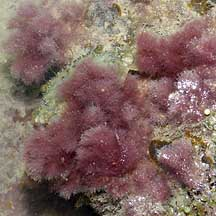
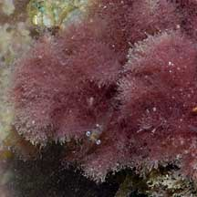
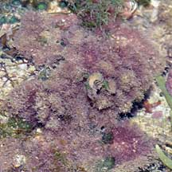
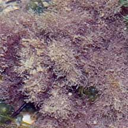
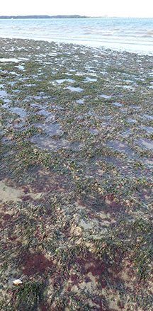

|
|
|
red
seaweeds text index
| photo index
|
| Seaweeds > Division Rhodophyta |
| Cotton
candy red seaweed Family Ceramiaceae updated Oct 15 Where seen? Like pink cotton candy, this seaweed is sometimes seen on our shores, blooming among seagrasses or attached to coral rubble near reefs. Features: Dense balls of fine filaments, each ball 3-5cm across, may cover an area of 15cm. Pinkish to maroon. A variety of species in the Family Ceriamaceae have this form including Centroceras, Corallophila and Gayliella. Polysiphonia (Family Rhodomelaceae) also has this form. One stage in the life cycle of the Cat's tail red seaweed also has a similar form. |
 Raffles Lighthouse, May 04  |
 Terumbu Buran, Nov 10  |
 Bloom on seagrasses Chek Jawa, Dec 25 |
*Seaweed species are difficult to positively identify without microscopic examination.
On this website, they are grouped by external features for convenience of display.
Cotton
candy red seaweed on Singapore shores
|
| Family Ceramiaceae recorded for Singapore Pham, M. N., H. T. W. Tan, S. Mitrovic & H. H. T. Yeo, 2011. A Checklist of the Algae of Singapore. +Lee Ai Chin, Iris U. Baula, Lilibeth N. Miranda and Sin Tsai Min ; editors: Sin Tsai Min and Wang Luan Keng, A photographic guide to the marine algae of Singapore
Family Rhodomelaceae recorded for Singapore Pham, M. N., H. T. W. Tan, S. Mitrovic & H. H. T. Yeo, 2011. A Checklist of the Algae of Singapore.
|
|
References
|